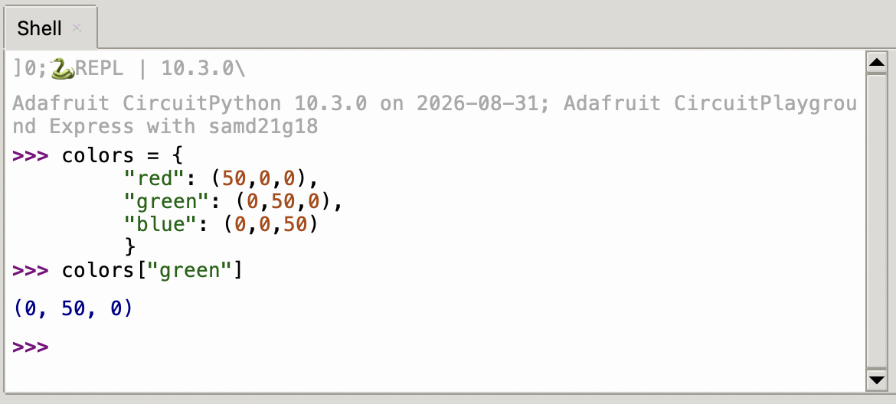
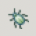
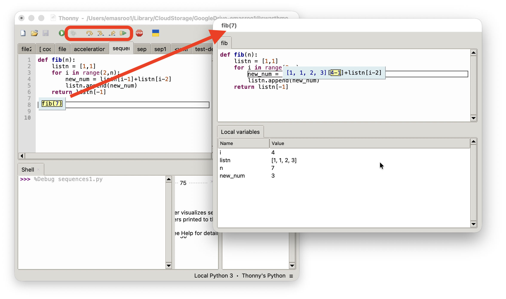
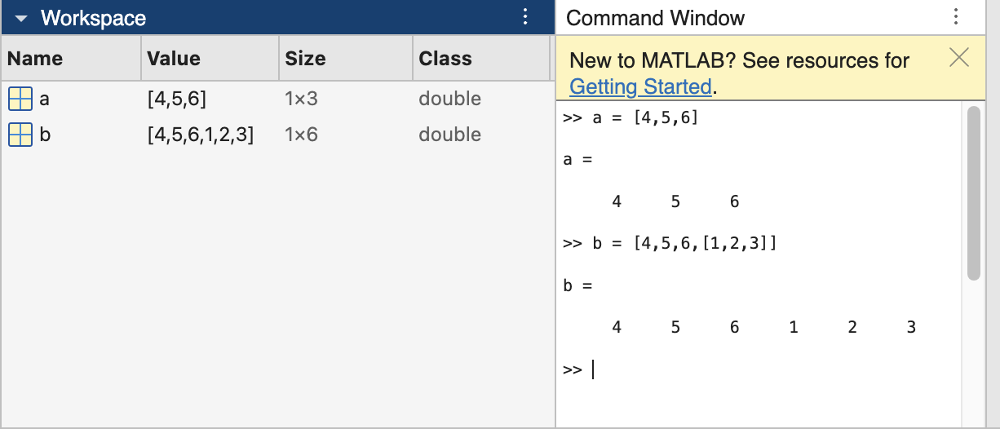
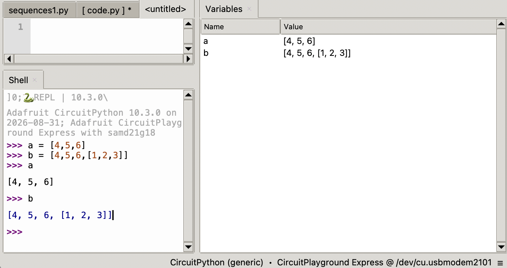
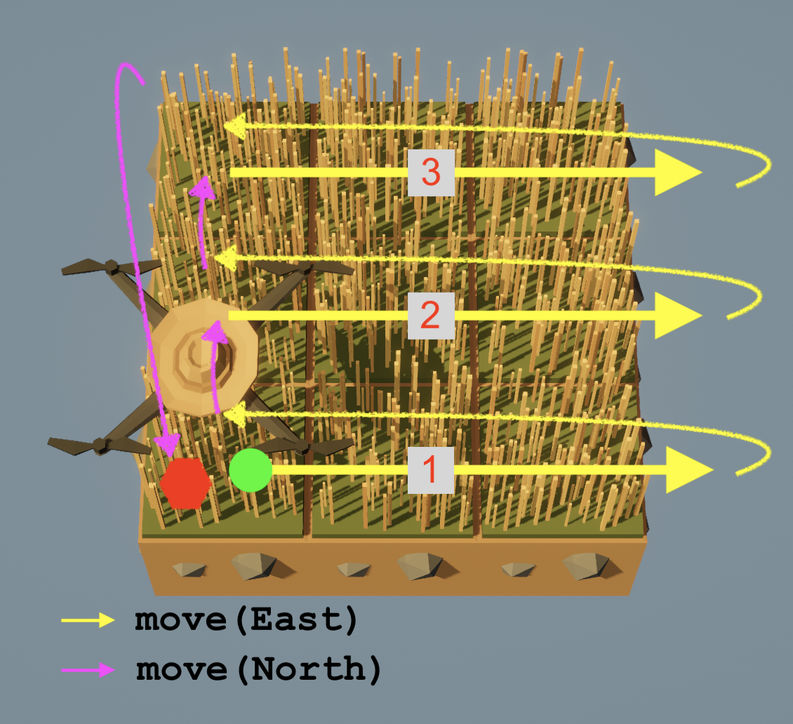

E21 Computer Engineering Fundamentals
September 17, 2026
Characterize the precision and accuracy of the on-board accelerometer. Find true value here.
Download statisticalfunctions.py and store on CIRCUITPY.
Use the following skeleton code
from adafruit_circuitplayground.express import cpx
from statisticalfunctions import stdev
import time
def magnitude(a,b,c):
return (a**2 + b**2 + c**2)**(1/2)
# Create an empty list that will store the readings
readings = []
# Time delay between measurements
delay = 0.1
# Collect data until button b is pressed
while True:
# Your code here
true_value = 9.806
# Your code hereYour program should print, for example:
After 99 readings, the accelerometer reports 9.417 m/s^2 with standard deviation 0.254 and a spread of 17.4%A dictionary is a collection of key-value pairs.
For example, we can define a dictionary with RGB values for common colors.
To use this dictionary,

There are two equivalent approaches:
Curly braces followed by key: value pairs separated by commas:
The dict function
Write a function for the Circuit Playground Express that:
a string denoting the color (choose 5 colors from https://rgbcolorpicker.com/)
a number from 0 to 9 denoting which pixel to switch on.
a number from 0 to 1 denoting the brightness
By pressing the

button, Thonny enters debugging mode


[] commands:>>> from adafruit_circuitplayground.express import cpx
>>> cpx.pixels
[(0, 0, 0), (0, 0, 0), (0, 0, 0), (0, 0, 0), (0, 0, 0), (0, 0, 0), (0, 0, 0), (0, 0, 0), (0, 0, 0), (0, 0, 0)]
>>> cpx.pixels[4] = (45,50,2)
>>> cpx.pixels
[(0, 0, 0), (0, 0, 0), (0, 0, 0), (0, 0, 0), (45, 50, 2), (0, 0, 0), (0, 0, 0), (0, 0, 0), (0, 0, 0), (0, 0, 0)]
>>> cpx.pixels[4][1]
50
>>> Why does this work:
But this does not?
for loop over a list\(^*\) of lists\(^*\)\(^*\) or any iterables (list, range, tuple)
Consider the list of lists:
Write a for loop that prints every element in a
Write a pair of nested for loops that print every element inside every element in a with the order: 5, 6, 7, …
for loops using indicesWe can print every element in a using
Another approach is to use the index:
Use the indices to print every element inside every element in a:
Print every element inside every element in a without using indices, i.e. no [] notation.
‘Raster scan’ refers to a systematic ‘sweeping’ of a two-dimensional rectangular area.
Harvest grass with your drone using East-then-North raster scanning in three different ways:

for loopfor loopsDownload the file pixelpatterns.py and save it on the CIRCUITPY drive
Enter the following command on the Circuit Playground:
You now have access to three functions: pattern1(), pattern2() and pattern_random(). Try them out!
Write a program for the CPX that prints the R, G, and B value of every pixel on a new line. The output of your program should look like this:
Pixel number 0, index number 0 has value 76
Pixel number 0, index number 1 has value 5
...
Pixel number 3, index number 2 has value 21
Pixel number 4, index number 0 has value 73
...
Pixel number 9, index number 1 has value 2
Pixel number 9, index number 2 has value 14E21 • Fall 2026 • Lecture 06 • September 17, 2026 • ↩︎